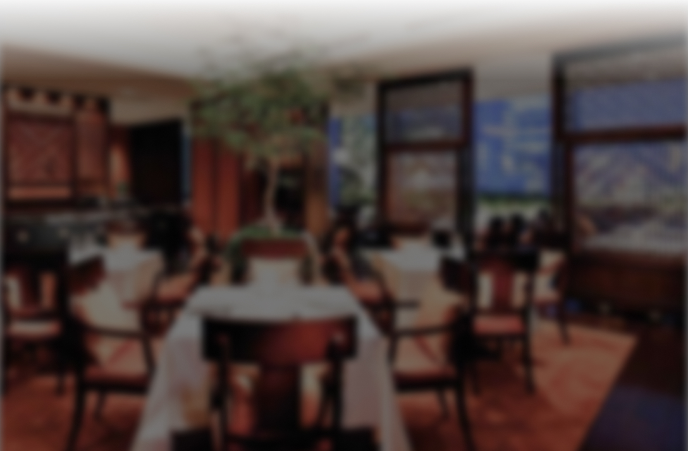
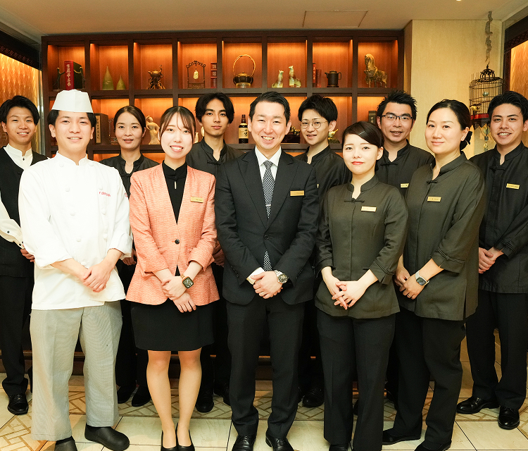
interview
先輩社員の声
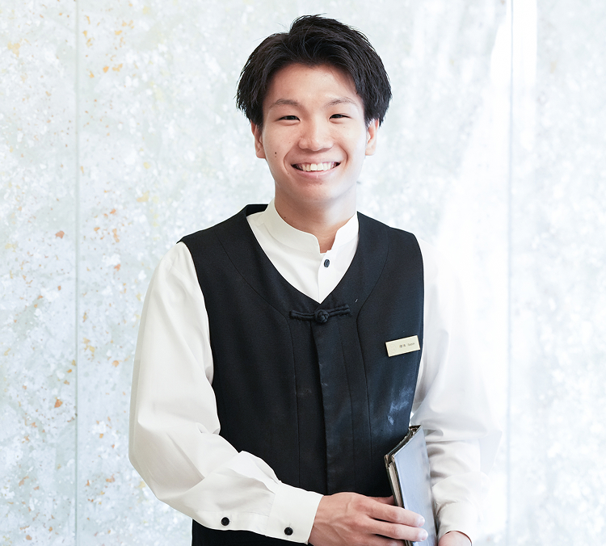
入社を決めたきっかけ
専門学校と中国飯店のつながりがあり、先輩が実際に働いていたことで興味を持ちました。話を聞く中で、寮や賄いをはじめとした福利厚生の手厚さを知り、長く安心して働ける環境だと感じたことが入社の決め手になりました。
入社後に感じたギャップや苦労したこと
ホール経験が全くなかったため、常にお客様の視線を意識しながら気を張り続ける緊張感や立ち仕事に、体が慣れるまで2〜3ヶ月かかりました。料理の提供一つにしても想像以上に気を使うことが多く、上海蟹シーズンの繁忙期は想像を超える忙しさでした。しかし経験を重ねるうちにホールの仕事が楽しくなり、当初のキッチン志望からホールで学び続けることを選びました。
今後のキャリアプランや夢
自分のお客様を作ることが目標です。常連のお客様には積極的にお声がけをし、事前にお客様の情報をしっかりと確認した上で、何を求めているかを先読みしながらおもてなしができるよう心がけています。小さな気遣いの積み重ねを大切に、集中力を持って継続していきたいと思っています。
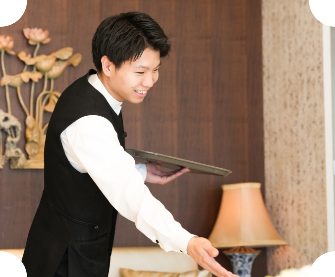
ONE DAY
勤務スケジュール
- 10:30 出勤
- 10:40 賄い休憩
- 11:00 ＭＴＧ
- 11:30 ランチ営業
- 15:00 ランチクローズ、片付け、ディナー準備
- 15:45 休憩
- 17:00 ディナー準備（セットの見直しや補充確認）
- 17:30 ディナー営業
-
22:00
クローズ
※ランチ、ディナー営業中に15分ずつ休憩あり
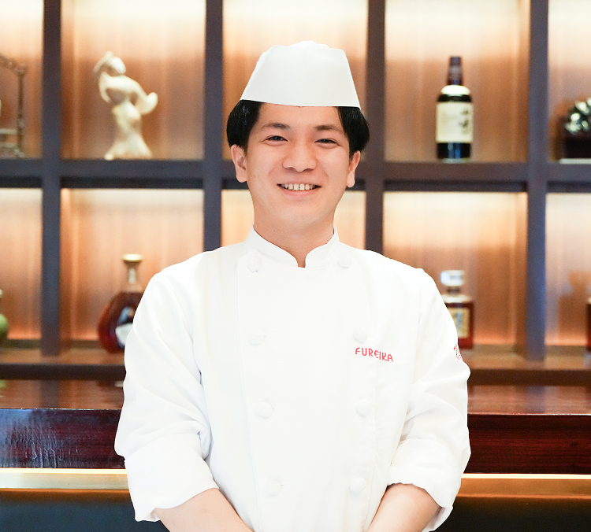
入社を決めたきっかけ
調理の専門学校で勉強している中で中国料理に興味を持ちました。中国飯店は中国人スタッフも多く本場の中国料理を学べると思ったのと、中国も好きだったので中国語も含めて勉強できると思ったので就職を決めました。
入社後に感じたギャップや苦労したこと
入社前から高級店と知っていましたが、お客様一人ひとりのニーズに細かく寄り添うサービスの水準は想像以上でした。1年目のホール研修では立ち振る舞いや言葉遣いを徹底的に学びました。2年目にキッチンへ異動すると7割が中国人スタッフで、最初は苦労しましたが、自ら中国語を勉強することでコミュニケーションが取れるようになりました。
今後のキャリアプランや夢
もっと中国語を話せるようになりたいです。将来的には日本人と中国人の懸け橋になれるように頑張りたいと思います。あとは入社3年目以上から対象になる上海研修にも行きたいですし、将来的には独立したいと思っています。
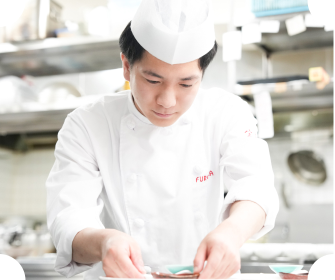
ONE DAY
勤務スケジュール
- 09:30 出勤 前菜の予約確認、仕込み準備など
- 11:00 朝ご飯休憩
- 11:30 ランチ営業
- 14:30 休憩（お昼ご飯休憩）
- 16:30 仕込み準備、ディナー営業準備
- 17:30 ディナー営業、仕込み、サポートが必要なポジションの手伝い
- 20:45 片付けスタート（21：15以降、手が空いた人から夜ご飯）
- 21:30 ラストオーダー
- 21:40 退勤
入社を決めたきっかけ
卒業後は接客業がやりたかったのと、人を笑顔に出来る仕事がしたいと思っていました。悩んでいる時に学校の先生から紹介してもらいパンフレットや会社案内を見て見学に行こうと思いました。中華も好きでしたし、高級店ということもあり気になったことがきっかけです。
入社後に感じたギャップや苦労したこと
六本木店はランチとディナーで求められることが異なり、ランチはビジネス客への迅速な対応、ディナーは接待・記念日利用のため丁寧さが求められます。上京したばかりで方言が残っていたため電話対応に苦労し、常連様のお顔とお名前を覚えることも大変でした。ランチ・ディナー営業による拘束時間の長さにも慣れるまで約1年かかりました。
今後のキャリアプランや夢
業務に慣れても流れ作業にならないよう、常に丁寧で温かい接客を心がけていきたいです。お客様にとって特別な日にご来店いただくことも多いため、その気持ちに応えられるよう意識しています。また、全てのお客様の情報を把握し、ニーズに合わせたおもてなしができるようになることが目標です。
ONE DAY
勤務スケジュール
- 11:00 出勤 予約状況の確認、開店準備
- 11:30 ランチ営業スタート
- 14:00 最終入店
- 15:00 ランチクローズ
- 15:15 休憩
- 17:00 ＭＴＧ
- 17:30 ディナーオープン
- 20:00 15分休憩
- 22:15 退勤
入社を決めたきっかけ
友人のお姉さんが中国飯店に就職していたのと、友人も就職が決まっていたので興味を持ちました。地方からの上京だったので、住むところや賄いがあるなど環境が整っていると思いました。学校を卒業して何も分からない状態での上京だったので、環境が整っているということは安心感がありました。
入社後に感じたギャップや苦労したこと
アルバイト経験はありましたが、社員となると重みが違い、まっさらな状態からのスタートでした。サーバーの使い方やお茶の入れ方、北京ダックのさばき方まで全てが新鮮で、覚えることの多さに苦労した記憶があります。中国人スタッフとは言葉や文化の違いから考えをすり合わせることが容易ではありませんでした。レセプションでは声のトーンや強弱を意識した電話対応と、売上を左右する予約調整の難しさを痛感しています。
今後のキャリアプランや夢
物販でも店舗名と結びつく代表的な料理を作り上げるため、人材育成やスタッフの知識向上に取り組んでいきたいです。また、子育てをしながら働く身として、同じ境遇のスタッフが困った時に相談できる、心の拠り所となる存在になりたいと思っています。
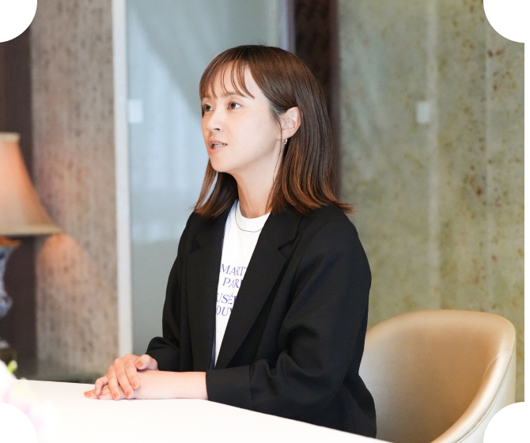
ONE DAY
勤務スケジュール
レセプション時短時
- 09:00 出勤 開店準備
- 10:00 電話番 物販業務
- 11:00 MTG
-
11:30
ランチ営業
電話対応・お客様案内・会計 - 15:00 ランチ締め後に退勤
物販業務時
- 09:00 出勤 午前中は業者との打ち合わせが多め
- 12:00 休憩
- 13:00 現場との打ち合わせや面談
- 16:00 退勤
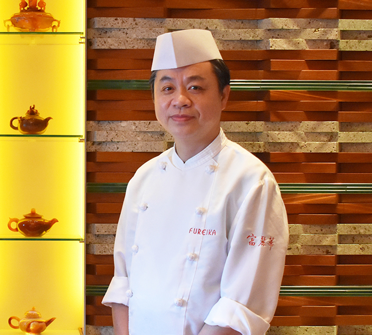
業務内容について
厨房業務全般を統括しています。新メニューの月次開発、食材の品質・在庫・コスト・衛生管理、業者との情報交換、スタッフの勤務管理とモチベーション向上のための教育など、厨房に関わるすべてを担っています。「美味しい料理は清潔な厨房から」の理念のもと、ホールスタッフとの日次ミーティングを欠かさず実施。料理がお客様の手元で最もおいしい状態で届くよう、厨房・ホール一体となったチームの連携強化と調整・統率を日々行っています。
スタッフについて
厨房には日本人・中国人スタッフが共に働いています。日本人は集中力が高く細部への気配りに優れ、向上心を持ってチームで力を発揮します。中国人は行動力があり、急な状況変化への対応力と各ポジションで培った豊富な経験が強みです。文化も言語も異なるスタッフをひとつのチームとして統合し、それぞれの強みを最大限に引き出すことが私の役割です。
求職者へのメッセージ
新しく入るスタッフに一番伝えたいのは「料理を好きになること」。それが厨房スタッフの原点です。日本と中国、異なる文化の良さを知り、違いの中に価値を見出す力が優れたシェフへの第一歩。仕事への情熱が大変な場面を乗り越える力になります。強い信念で夢に向かえる、他社にはないこの職場でぜひ一緒に働きましょう。
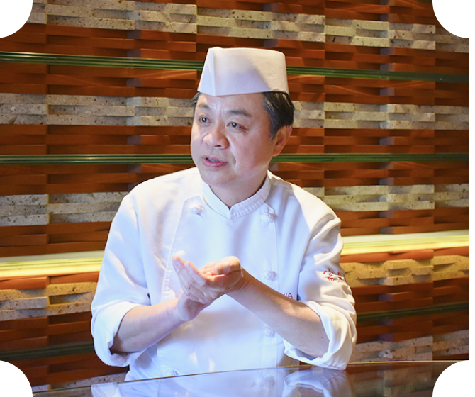
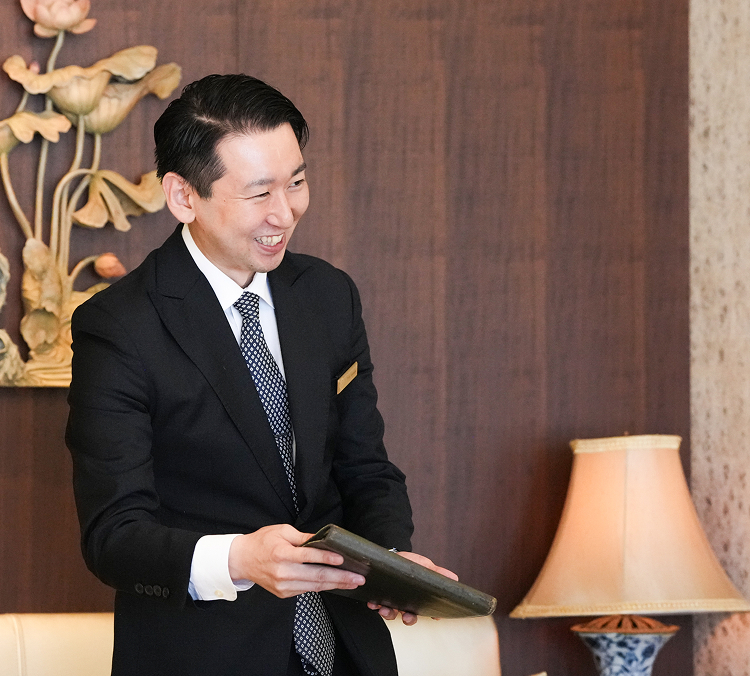
入社を決めたきっかけ
高校を卒業したら「東京に出て何か挑戦したい！」と考えており、偶然見つけた中国飯店の求人に寮があると知り入社を決意しました。同期や先輩に恵まれて、忙しい中でも楽しく目標をもって続けることができました。
入社後に感じたギャップや苦労したこと
飲食もサービスも未経験のまま18歳でお店に立ち、覚えることの多さや緊張感に苦労しました。良かれと思って発した言葉一つがお客様を不快にさせてしまうこともあり、接客の難しさを痛感しました。成長に躓き、辞めたいと思うこともありましたが、そんな時は必ず誰かが声をかけてくれる環境に何度も救われました。悩みながらも仲間に支えられて今に至ります。
求職者へのメッセージ
中国飯店は助け合い、学び合い、尊敬し合える仲間と働ける職場です。成長に躓いた時は新たな気づきやお客様との出会いがありスキルも磨けます。悩んでいる時は必ず誰かが声をかけてくれる環境です。お客様のご期待を上回る素敵な時間を一緒に提供し、あなた自身のファンを作っていきませんか？
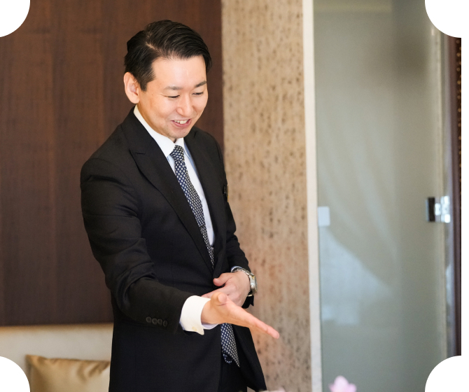
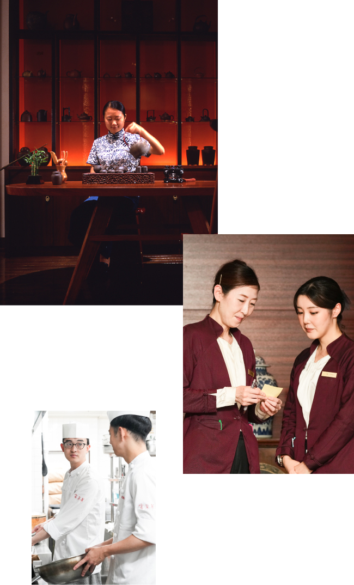
data＆info
数字で見る働く環境
INDUSTRY COMPARISON
中条商事 × 飲食業界平均
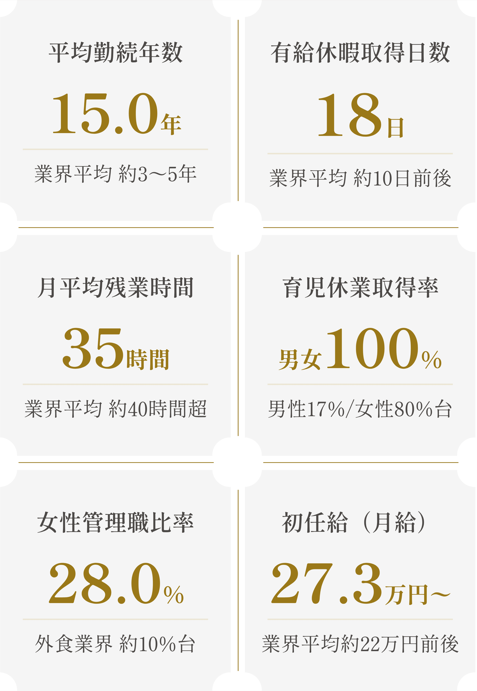
※ 業界平均値は厚労省「雇用動向調査」「就労条件総合調査」、経産省「外食産業実態調査」、⺠間調査求人@飲食店.COM、 OpenWork、 エン・ジャパン等を参考に整理した概数値。中条商事実績はマイナビ2027 掲載値2024年度
BENEFIT
主な福利厚生
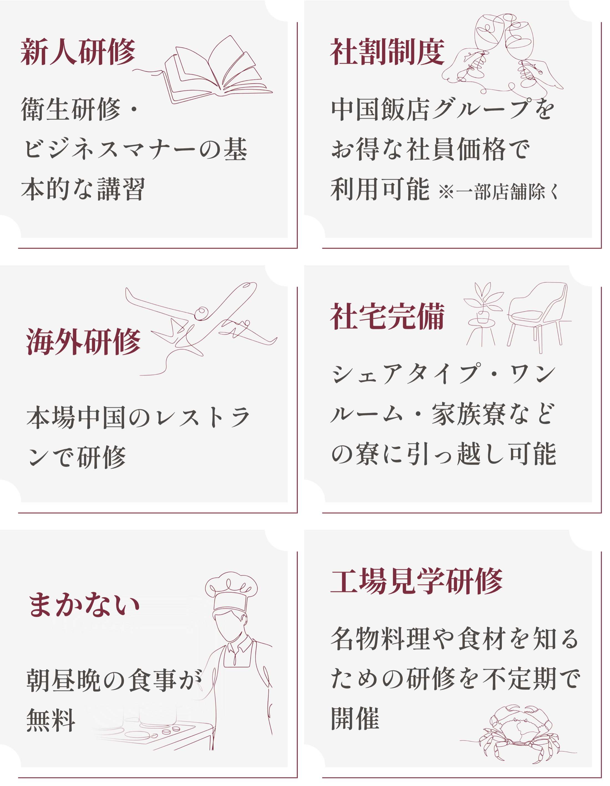
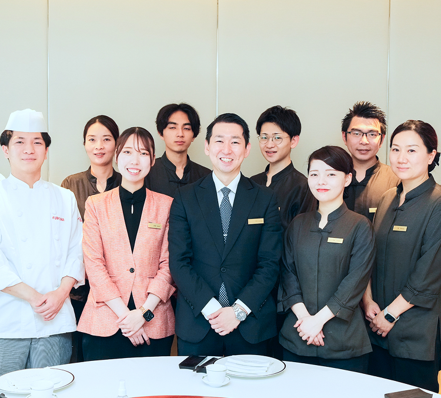
DATA
数字で見る中条商事
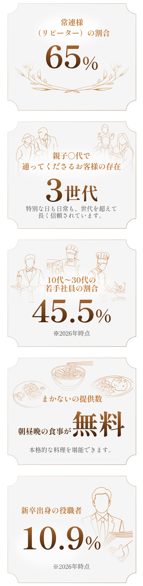
store
information
店舗情報
レストラン 7店舗（東京）
レストラン 3店舗（名古屋/軽井沢）
物販/パティスリー/バー
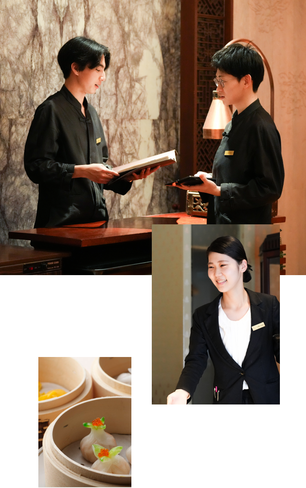
job
description
募集要項
募集職種
ホール、レセプション、キッチン（中国料理、点心）、パティシエ、販売
応募資格
学歴不問、当社の理念に共感し共に成長していける方
給与
月給273,000〜400,000円（職種により異なる）
勤務地
東京都内7店舗、軽井沢1店舗、名古屋2店舗など
※エリアごとの採用となります
諸手当
交通費（月2万円迄）、食事手当（賄い無料）、寮制度、社割制度など
休日休暇
週休2日（年間休日107日）、年末年始休暇、有給休暇取得実績18日
flow
選考フロー
-
1
エントリー
-
2
会社説明会
-
3
書類選考
-
4
面接（複数回）
-
5
内定
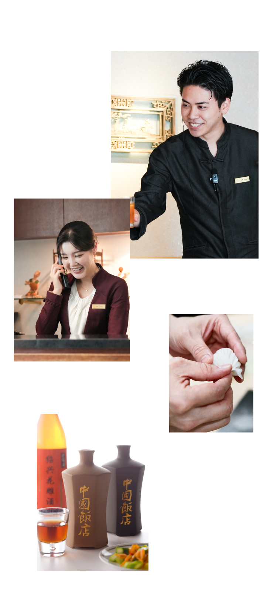